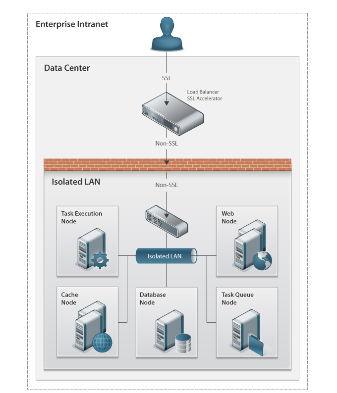
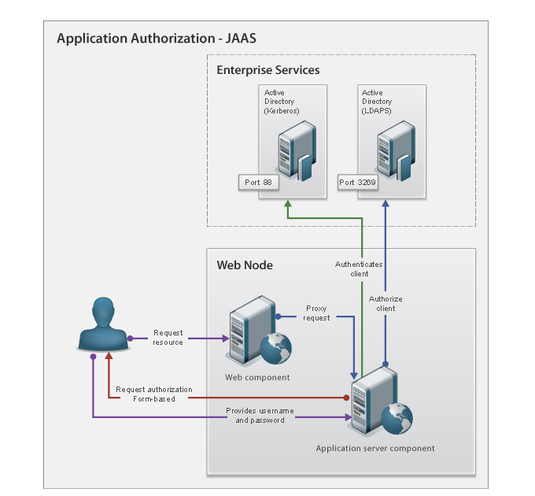

Eureka Streams

Home > Technical Specification > Security architecture Security architectureArchitecture tradeoff analysis Logical architecture Security Context Diagram LogicalClient Authentication and Authorization - Pre-authentication configuration Client Authentication and Authorization - JAAS Authentication configuration
Application SecurityDepending on the configuration, either the Web component or the Application component has the role of authenticating the client. If the Web component provides the authentication service, then it can also perform in initial authorization. Regardless of the Web component performing authorization, the Application component performs authorization. AuthenticationThe Web component provides basic HTTP services as well as client authentication. A client must first pass through this component and depending on configuration, authenticate in order for their credentials to be passed on. The application server component accepts the credentials from the Web component and uses them to set the client identity in the system. A de-authenticated user has an empty set of credentials and is stopped by the application server component when client identity is required. If the configuration has the application component authenticating, then the client is passed through the Web component de-authentication in order for the application component to fulfill this task. Once the application component has successfully authenticated the client, their credentials are set and can move on to the authorization step. AuthorizationThe Web component provides the ability to authorize client access to the system via Active Directory id or membership in an LDAP group providing the system is configured to authenticate the client. The application server component enforces client authorization to the system as set by the root organization coordinator. An authenticated client that does not have system authorization is redirected to a page enabling them to request system access from the root organization coordinator. OAuth SecurityThe Eureka OAuth Provider stores all current Consumer Keys and Access Tokens for OAuth requests made within Eureka. This OAuth Provider secures both the OpenSocial container as well as the REST endpoints within Eureka. OAuth Provider Responsibilities
OpenSocial ContainerOpenSocial Container and Gadget Renderer Diagram
OpenSocial Gadget Rendering is handled by Apache Shindig 1.1. For the purposes of this article, container refers to Eureka Streams. Gadget Rendering Security
Gadget Security with IFrames
OpenSocial APIs and OAuth
Data SecurityThe database component, search component, and cache component are responsible for persisting data within the Eureka Streams system. Database Component The database component is implemented with a relational database management systems that provides its own authentication and authorization mechanism. The data is stored in native format and is not encrypted. Connection to this component is made by the application component via a JDBC driver. Search Component The search component is implemented via the Lucene search engine. The search indexes are persisted in files located in the file system. These files are protected by file permissions within the operating system. The data is stored in the native Lucene search engine format. Cache Component The cache component is implemented via the memcached system. The system persists the data to volatile memory space supported by the operating system. The data persisted is not encrypted. The cache is accessed via a network socket that does not provide authentication or authorization. All components that interact with the cache system exist within the trusted private VLAN and are trusted systems, thus does not require authentication or data encryption. ExecutionSystem ManagementThe component systems for Eureka Streams are virtual machines executing within a virtual farm composed of VMWare ESX physical hosts. Management of the virtual machines is done via client software making a network connection to the physical server hyper-visor software. System administration is accomplished by making a client software connection, opening up a console window to the virtual machine, and using the terminal session to administer the server or make a connection to other servers if needed. NetworkingNode TCP StackEach node within the system deployment has an operating system utility enabled named iptables. This utility is a TCP packet filter that enables the configuration of all network traffic into and out of the node. Each node is configured implicitly to deny incoming network traffic with explicit allows in place for ports from hosts that are allowed to communicate. For example, the cache nodes deny all incoming network traffic except for Web nodes trying to reach port 11211. The cache nodes deny all outbound network traffic originated from the node itself. The configuration allows for state-full connections so that this node can communicate back out to hosts that open a connection with it. Firewall/Subnet LANThe component systems that make up Eureka Streams are protected behind the firewall component and exist in a standalone switch on a subnet LAN. The component systems can communicate with each other as they exist on the same subnet LAN and their network traffic does not leave the standalone switch. The firewall component is configured to implicitly deny all inbound and outbound traffic. Specific network ports and addresses that are allowed in and out are explicitly stated in the firewall rules. The network components all reside within the same data center, thus keep within the same local LAN and not travel over a WAN. Secure Socket Layer (SSL)Interaction with the Web node from the client is done via transport layer security using the security socket layer (SSL) protocol version 3.0. The load balancing component provides the SSL hardware acceleration capability F5 Big IP - SSL. Socket connections from the client to the load balancing component are secured via SSL. Socket connections from the load balancing component to the firewall component and onto the Web Server component systems are not secured and travel unencrypted. The connection path from load balancer to firewall to Web server are within the same data center, thus keep within the same local LAN and not travel over a WAN. Due to the fact that no out-of-subnet LAN connections can be made from node to node ensure that unencrypted data is not exposed to unintended destinations and save in data encryption costs that would normally be needed to ensure data security. References | PAGE CONTENTS
Version 0.9 Documentation is also available for all of the following versions: |


{kind=link}